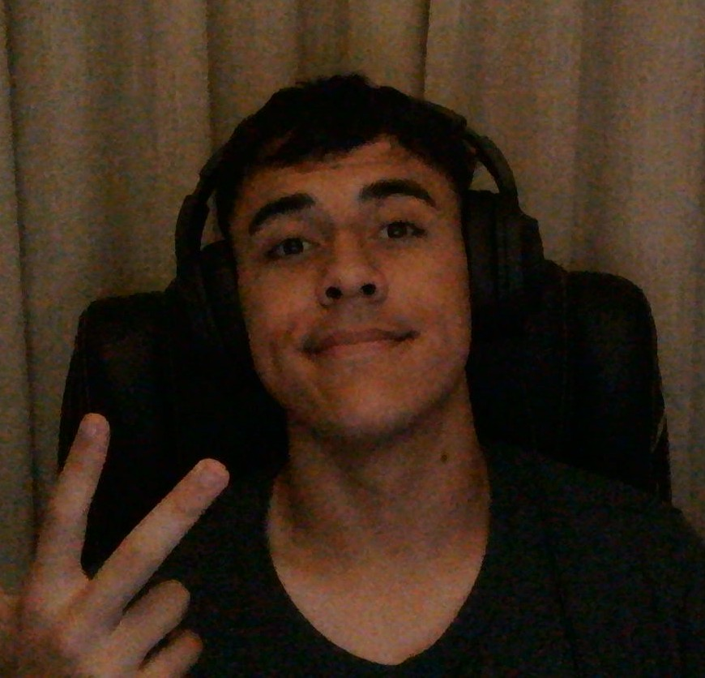

Prazer, me chamo Antony, tenho 17 anos e sou um estudante de desenvolvimento de software. Atualmente, estou cursando o ensino médio e tenho uma paixão por tecnologia e programação. Desde cedo, sempre fui fascinado por computadores e como eles funcionam, o que me levou a explorar o mundo da programação. Sou extrovertido, sou muito fã de trabalhos em grupo, e esse portifólio é uma paleta do que sei fazer, pretendo continuar evoluindo na área e como pessoa.